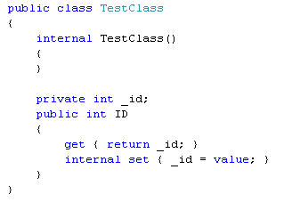
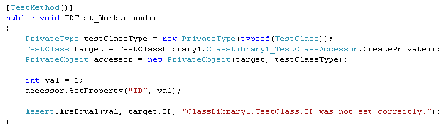

Tag: tdd
Testing the Untestable with Microsoft Fakes
Posted by bsstahl on 2017-03-20 and Filed Under: development
It is fairly easy these days to test code in isolation if its dependencies are abstracted by a reusable interface. But what do we do if the dependency cannot easily be referenced via such an interface? Enter Shims, from the Microsoft Fakes Framework(formerly Moles). Shims allow us to isolate our testing from any dependent methods, including methods in assemblies we do not control, even if those methods are not exposed through a reusable interface. To see how easy it is, follow along with me through this example.
In this sample code on GitHub, we are building a repository for an application that currently gets its data from a file exported from a system that tracks scheduled meetings. It is very likely that the system will, in the future, expose a more modern interface for that data so we have isolated the data storage using a simple Repository interface that has one method. This method, called GetMeetings returns a collection of Meeting entities that start during the specified date range. The method will return an empty collection if no data is found matching the specified criteria, and could throw either of 2 custom errors, a PermissionsExceptionwhen the user does not have the proper permissions to access the information, and a DataUnavailableException for when the data source is unavailable for any other reason, such as a network outage or if the data file cannot be located.
It is important to point out why a custom exception should be thrown when the data file is not found, rather than allowing the FileNotFoundException to bubble-up. If we allow the implementation-specific exception to bubble, we have exposed an implementation detail to the caller. That is, the calling code is now aware of the fact that this is a file system implementation. If code is written in a client that traps for FileNotFoundException, then the repository implementation is swapped-out for a SQL server implementation, the client code will have to change to handle the new types of errors that could be thrown by that implementation. This violates the Dependency Inversion principle, the “D” from the SOLID principles. By exposing only a custom exception, we are hiding those implementation details from the caller.
Downstream clients can easily test code that uses this repository without having to actually access the repository implementation because we have exposed the IMeetingSourceRepository interface. However, it is a bit more difficult to actually test the repository implementation itself. We have a few options here:
- Create data files that hold known data samples and load those files during unit testing.
- Create a wrapper around the System.IO namespace that exposes an interface, such as in the System.IO.Abstractions project.
- Don’t test any code that requires reaching-out to the file system.
Since I am of the opinion that 100% code coverage is both reasonable, and desirable (although not a measurable goal), I will summarily dispose of option 3 for the purpose of this analysis. I have used option 2 many times in my life, and while employing wrapper code is a valid and reasonable solution, it adds additional code to my production deployments that is very limited in terms of what it adds to the loose-coupling of my solution since I already am loosely-coupled to this implementation via the IMeetingSourceRepository interface.
Even though it is far from a perfect solution (many would consider them more integration tests than unit tests), I initially selected option 1 for this implementation. That is, I created data files and deployed them along with my tests. You can see the test files I created in the Data folder of the MeetingSystem.Data.FileSystem.Test project. These files are deployed alongside my tests using the DeploymentItem directive that decorates the Repository_GetMeetings_Should class of the test project. Using this method, I was able to create tests that:
- Verify that the correct # of meetings are returned from a file
- Verify that meetings are properly filtered by the StartDateTime of the meeting
- Validate the data elements returned from the file
- Validate that the proper custom exception is thrown if a FileNotFoundException is thrown by the underlying code
So we have verified nearly everything we need to test in our implementation. We’ve verified that the data is returned properly, and that one of our custom exceptions is being returned. But what about the PermissionsException? We were able to simulate a FileNotFoundException in our tests by just using a bad filename, but how do we test for a permissions problem? The ReadAllText method of the File object from System.IO will throw a System.Security.SecurityException if the file cannot be read due to a permissions problem. We need to trap this exception and throw our own exception, but how can we validate that we have successfully done so and that the functionality remains intact through future refactoring? How can we simulate a permissions exception on a file that we have enough permission on to deploy to a test folder? Enter Shims from the Microsoft Fakes Framework.
Instead of having our tests actually reach-out to the file system and actually try to load a file, we can intercept calls to the System.IO.File.ReadAllText method and have those calls execute some delegate code instead. This code, which we write in our test methods, can be specific to each test and exist only within the context of the test. As a result, we are not deploying any additional code to production, while still thoroughly validating our code. In fact, using this methodology, I could re-implement my previous tests, including my test data in the tests themselves, making these tests better unit tests. I could then reserve tests that actually reach out to files for integration test libraries that are run less frequently, and perhaps even behind the scenes.
Note: If you wish to follow-along with these instructions, you can grab the code from the DemoStart branch of the GitHub repo, rather than the Master branch where this is already done.
To use Shims, we first have to create a Fakes Assembly. This is done by right-clicking on the System reference in the test project from Visual Studio 2017, and selecting “Add Fakes Assembly” (full framework only – not yet available for .NET Core assemblies). Be sure to do this in the test project since we don’t want to actually deploy the Fakes assembly in our production code. Using the add fakes assembly menu item does 2 things:
- Adds a reference to Microsoft.QualityTools.Testing.Fakes assembly
- Creates 2 .fakes XML files in the Fakes folder within the test project. These items are built into corresponding fakes dll files that are deployed with the test project and used to provide stub and shim objects that mimic the objects in the selected assemblies. These fake objects reside in the same namespace as their “real” counterparts, except with “Fakes” on the end. Thus, our fake File object will reside in the System.IO.Fakes namespace.

The next step in using shims is to create a ShimsContext within a Using statement. Any method calls that execute within this context can be intercepted and replaced by our delegates. For example, a test that replaces the call to ReadAllText with a method that returns a single line of constant data can be seen below.
Methods on shim objects are referenced through properties of the fake object. These properties are of type FakesDelegate.Func and match the signature of the method being shimmed. The return data type is also appended to the property name so that each item’s signature can be represented with a different property name. In this case, the ReadAllText method of the File object is represented in the System.IO.Fakes.File object as a property called ReadAllTextString, of type FakesDelegate.Func<string, string>, since the method takes a string parameter (the path of the file), and returns a string (the text contents of the file). If we assign a method delegate to this property, that method will be executed in place of the call to System.IO.File.ReadAllText whenever ReadAllText is called within the ShimContext.
In the gist shown above, the variable p represents the input parameter and will hold the path specified in the test (in this case “April2017.abc”). The return value for our delegate method comes from the constant string dataFile. We can put anything we want here. We can replace the delegate with a call to an anonymous method, or with a call to an existing method. We can return a value gleaned from an external source, or, as is needed for our permissions test, throw an exception.
For the purposes of our test to verify that we throw a PermissionsException when a SecurityException is thrown, we can replace the value of the ReadAllTextString property with our delegate which throws the exception we need to test for, as seen here:
System.IO.Fakes.ShimFile.ReadAllTextString =
p => throw new System.Security.SecurityException("Test Exception");
Then, we can verify in our test that our custom exception is thrown. The full working example can be seen by grabbing the Master branch of the GitHub repo.
What can you test with these Shim objects that you were unable to test before? Tell me about it @bsstahl.
Tags: abstraction assembly code sample framework fakes interface moles mstest solid tdd testing unit testing visual studio
Demo Code for Testing in Visual Studio 2017
Posted by bsstahl on 2017-03-16 and Filed Under: event
The demo code for my presentation on Testing in Visual Studio 2017 at the VS2017 Launch event can be found on GitHub. There are 2 branches to this repository, the Main branch which holds the completed demo, and the DemoStart branch which holds the starting point of the demonstration in case you would like to implement the sample yourself.
The demo shows how Microsoft Fakes (formerly Moles) can be used to create tests against code that does not implement a reusable interface. This can be done without having to resort to integration style tests or writing extra wrapper code just to implement an interface. During my launch presentation, I also use this code to demonstrate the use of Intellitest (formerly Pex) to generate exploratory tests.
Tags: abstraction code sample coding-practices community conference development di interface microsoft moles mstest pex phoenix presentation tdd testing unit testing visual studio
Testing a .NET Core Library in VS2015
Posted by bsstahl on 2017-01-09 and Filed Under: development
I really enjoy working with .NET Core. I like the fact that my code is portable to many platforms and that the footprint is so much smaller than with traditional .NET applications. Unfortunately, the tooling has not quite reached the level that we expect from a Microsoft finished product (which it isn’t – yet). As a result, there are some additional actions we need to take when setting up our solutions in Visual Studio 2015 to allow us to unit test our code properly. The following are the steps that I currently take to setup and test a .NET Core library using XUnit and Moq. I know that a number of these steps will be done for us, or at least made much easier, by the tooling in the coming months, either by Visual Studio 2017, or by enhancements to the Visual Studio 2015 environments.
- Create the library to be tested in Visual Studio 2015
- File > New Project > .Net Core > Class Library
- Notice that this project is created in a solution folder called ‘src’
- Create a solution folder named ‘test’ to hold our test projects
- Right-click on the Solution > Add > New Solution Folder
- Add a new console application to the test folder as our test project
- Right-click on the ‘test’ folder > Add > New Project > .Net Core > Console Application
- Add a reference to the library being tested in the test project
- Right-click on the test project > Add > Reference > Select the library to be tested
- Install packages needed for unit testing from NuGet to the test project
- Right-click on the test project > Manage NuGet Packages > Browse
- Install ‘xunit’ as our unit test runner
- The current version for .Net Core is ‘2.2.0-beta4-build3444’
- Install ‘dotnet-test-xunit’ to integrate xunit with the Visual Studio test tools
- The current version for .Net Core is ‘2.2.0-preview2-build1029’
- Install ‘Moq’ as our mocking library
- The current version for .Net Core is ‘4.6.38-alpha’
- Edit the project.json of the test library
- Change the “EmitEntryPoint” option to false
- Add “testrunner” : “xunit” node
Some other optional steps include:
- Install the ‘Microsoft.CodeCoverage’ package from NuGet to enable the code coverage tooling
- Install the ‘Microsoft.Extension.DependencyInjection’ package from NuGet to enable DI
- Install the ‘TestHelperExtensions’ package from NuGet to add extensions that assist with writing good unit tests
- Add any additional runtimes that might be needed. Some options are:
- win10-x86
- win10-x64
- win7-x86
- win7-x64
- Set ‘Run tests after build’ in Visual Studio so tests run automatically
There will likely be better ways to do many of these things shortly, but if you know a better way now, please let me know @bsstahl.
Tags: testing code coverage development di ioc microsoft moq mocks professional development tdd unit testing visual studio dotnet
TDD Helps Validate Your Tests
Posted by bsstahl on 2016-03-05 and Filed Under: development
One of the reasons to use TDD over test-later approaches is that you get a better validation of your tests.
When the first thing you do with a test or series of tests is to run them against code that does nothing but throw a NotImplementedException, you know exactly what to expect. That is, all tests should fail because the code under test threw a NotImplementedException. After that, you can take iterative steps to implement the code. Along the way, you should always see your tests fail in appropriate ways. Eventually, all of your tests should pass when the code is complete.
If tests start passing before they should, continue to fail when they shouldn’t, or fail for reasons that are different than what you’d expect at that point in the development process, you have a good indication that the test may not be doing what you want it to be doing. This additional information about the tests can be very helpful in making sure your unit tests are properly testing your code.
Think about what happens when you add tests after the code has already been written. Suppose you write a test for existing code, and it passes. What do you really know about the test? Is it working because it is adequately exercising your code? Did you forget to do an assert? Is it even testing the proper bit of code? Code coverage tools can help with some of this but they can only help if the code under test is not already touched by other tests. Stepping through the code in debug mode is another possibility, a third option is to comment out the code as if you were starting from scratch, effectively doing a TDD process without any of the other benefits of TDD.
What about when you write a test for previously written code, and the test fails? At this point, there are 2 possibilities:
- The code-under-test is broken
- The test is broken
You now have 2 variables in the equation, the code and the test, when you could have had only 1. To eliminate 1 of the variables, you have to again perform the TDD process without most of its benefits by commenting out the code and starting from ground zero.
Following a good TDD process is the best way to be confident that any test failures indicate problems in the code being tested, instead of the tests themselves.
Tags: code analysis code coverage coding-practices tdd testing unit testing
Test-Driven Bug Fixes
Posted by bsstahl on 2016-02-27 and Filed Under: development
I had an experience this past week that reminded me of both the importance of continuing the Test Driven Development process beyond the initial development phases of a application's life-cycle, and that not all developers have yet fully grasped the concepts behind Test Driven Development.
One of the development teams I work with had a bug come-up in a bit of complex logic that I designed. I was asked to pair-up with one of the developers to help figure out the bug since he had already spent several hours looking at it. When I asked him to show me the tests that were failing, there weren't any. The bug was for a situation that we hadn't anticipated during initial development (a common occurrence) and he had not yet setup any tests that exposed the bug.
We immediately set out to rectify the situation by creating tests that failed as a result of the bug. Once these tests were created, it was a fairly simple process to use those tests as a debug platform to step through the code, find the problem and correct the bug. As is sometimes the case, fixing that bug caused another test to fail, a situation that was easily remedied since we knew about it due to the failing test.
After the code was complete and checked-in for build, the developer I was working with remarked on how he now "got it". He had heard the words before, "…write a test to expose the bug, then fix the bug." but they were empty words until he actually experienced using a test to do the debugging, and then saw existing tests prevent a regression failure in other code due to our bug fix. It is an experience all TDD practitioners have at some point and it is easy to forget that others may not yet have grokked the concepts behind the process.
Coincidentally, that very night, I got a ping from my friend Jeremy Clark (blog, twitter) asking for comments on his latest YouTube video on TDD. After watching it, I really couldn't offer any constructive criticism for him because there was absolutely nothing to criticize. As an introduction to the basics of TDD, I don't think it could have been done any better. If you are just getting started with TDD, or want to get started with TDD, or want a refresher on the basics of TDD, you need to watch this video.
Jeremy has indicated he will be doing more in this series in the future, delving deeper into the topic of TDD. Perhaps he will include an example of fixing a bug in existing code in a future video.
Tags: agile coding-practices professional development tdd testing unit testing
Remove Any Code Your Users Don't Care About
Posted by bsstahl on 2015-09-28 and Filed Under: development
Code Coverage has been the topic of a number of conversations lately, most recently after the last Southeast Valley .NET User Group meeting where Jeremy Clark presented his great talk, Unit Testing Makes Me Faster. During this presentation, Jeremy eponymized, on my behalf, something I've been saying for a while, that the part of an application that you don't need to test is the part that your users don't care about. That is, if your users care about something in your application, you should be writing tests that ensure that the users' needs are fulfilled by your code. This has never really been a controversial statement, just one that sometimes gets lost in the myriad of information about unit testing and test driven development.
Where the conversation got really interesting was when we started discussing what should happen if you decide that a piece of code really isn't important to your users. It is my assertion that code which is deemed unimportant enough to the user that it might not be tested, should be removed from the project, even if is part of a standard implementation. I will attempt to justify this assertion by using the example of a property implementation that supports the INotifyPropertyChanged interface.

A visualization of the results of Code Coverage analysis on a typical property implementation. The blue highlights represent code that is covered by tests, the red highlights represent code that is NOT covered by tests.
In this example, we have a property getter and setter. The getter simply returns the value stored in the internal member. However the setter holds some actual logic. In this case, the new value being set is compared to the current value of the property. If the property value is changing, the update is made and a method called that fires a notification event indicating that the value of the property has changed. This is a fairly common implementation, especially for View-Model layer code.
Decision: Do my users care about this feature?
The conditional in this code is designed to skip the assignment and the change notification if the property value is not really changing. If we were to eliminate the conditional, it would impact the users of this code in the following ways?
- A few CPU cycles may be wasted on an assignment that isn't doing anything
- An event indicating the property was changed would fire incorrectly
In the vast majority of cases, the performance hit from item 1 is trivial and can be ignored. Item 2 however is a bit more complicated. Unless I know for certain that firing the event when the property is not really changing isn't a problem, I have to assume it is a problem, since there are any number of things that could happen as a result of having an event fire. Often, when this event fires it will cause a refresh of the bound data to the UI elements. This may have a significant impact on performance, or it may not. There may also be additional actions taken by the programmers of this event client that may not be foreseeable when designing this layer. If the circumstances are such that I know there will be no problems if the event fires more often than it should, then I can probably conclude that my users don't care about this code. In all other circumstances, I should probably conclude that they do.
Decision: Should I remove this code?
If I have concluded that my users care about the code, then my path is clear, I should leave the code in place and write tests to make sure that the event fires when it should, and only when it should. However, if I have concluded that my users don't care about this particular code, then I have another decision to make. I need to decide if I should leave the code untested but in place, remove the code from my project, or leave it in and write tests for it anyway.
If the feature is not important to the users and there is no likelihood that the feature will become important to the users in the future, then the code should not be there. Period. We cannot waste time and effort supporting code that our users will not need. Scope-creep is a real danger to any project and should be avoided at all costs, even on the small stuff. Lots of small stuff adds up to big stuff, especially over the lifespan of any non-trivial application.
So, if the features are important to the users, we test them, if they are unimportant to the users, we remove them. No controversy here. The questions come in when there is a likelihood that the feature could become important in the future, or if the feature is important to someone other than the users, such as the developers.
Suppose we decide that the users are likely to request this feature in the future. Wouldn't it be easier just to implement the feature now, when we are already in the code and familiar with it? My answer to this is to fall back on YAGNI. You Ain't Gonna Need It, has proven itself a valuable principal for preventing scope-creep. Even if you think it is pretty likely that you'll need something later, the reality is that you probably won’t. Based on this principal, we should not be putting features into our projects that are not needed right now.
But what about the situation where code is important to someone other than the users, for example, the developers? In this case, we have to decide if the code really is important, or is it just another case where the YAGNI principal should be applied. Technical requirements can be legitimate, but any requirement that is not directly in support of the user's needs is a smell that should be investigated. In the case of our property setter, saying that standardization is important and using that logic to make standardization a requirement sounds a lot like saying "I think this feature may be important someday" and it probably falls to YAGNI to keep it out of our code. That being said, if there is a technical requirement that is truly needed, it should be tested like any other important requirement. For a little more information on this, see my earlier analysis Conflict of Interest: Yagni vs. Standardization.
How About we Leave It and Just Don't Test It?
It is important to remember that we shouldn't simply leave code untested in our production code, even if the users don't really care about it right now. If we do so, and the feature becomes important in the future, we will almost certainly end up with code that is important to our users, but is untested and therefore at-risk. We are unlikely to go back into an application and just add tests for a feature that already exists simply because that feature is now important when it wasn't earlier. We'd like to think we would, but the fact is that we won't. No, leaving the code in the application, but untested, is not an option.
The Case for 100% Code Coverage
So, we want to remove any code that is not currently required by our users, and test all code that is truly needed. If you have come along with me on this you may now realize that 100% code coverage is actually a reasonable goal, since that would be the result of removing all unneeded code and testing all needed code. This is not to say that it is reasonable to use Code Coverage as a metric with which to judge a development team, but instead it should be considered as a tool that can help identify scope-creep and missing tests. Since we are testing all code that our users care about, and not adding any code that the users don't care about, we should expect to approach 100% code coverage in order to have a good chance of producing well-tested, maintainable code that gives us the flexibility and confidence to refactor ruthlessly.
Code Coverage sometimes gets a bad reputation because it can be easy to game. That is, it is not a good metric of success for a development team. However, it is a magnificenttool to help you identify places where tests are missing. It won't tell you where your tests are not doing what they need to do, but it will tell you when you have a piece of code that is not exercised by any tests. If you are a TDD (Test-Driven-Development) practitioner, as I am, Code Coverage will tell you when you’ve gotten ahead of yourself and written code before writing a test for it. This is especially valuable for those who are just learning TDD, but never loses its value no matter how experienced you are at TDD.
Continue the Conversation
How do you feel about this logic? Did I miss something critical in this analysis? Have you found something different in your experience? Let's keep this conversation going. Ping me @bsstahl with your comments, or post on your blog and send me the link.
Tags: code coverage testing tdd unit testing yagni agile
Introducing TestHelperExtensions
Posted by bsstahl on 2015-08-26 and Filed Under: development
TL;DR Version
I've released a new Open-Source library of extension methods that can be used to create more effective unit and integration tests. This library is called TestHelperExtensions. The source code is available on GitHub (pull requests welcome), a .NET 4 package is available via NuGet, and the documentation is available here. The goal is to allow anyone to have access to the same set of test helpers I have been using, and building up, for many years.
The Story
I have been giving Test Driven Development (TDD) sessions at code camps and conferences for a number of years. During those sessions, I spend a lot of time in code, building up a test suite for a production application, and demonstrating the process I use for TDD. Part of this process is using a set of extension methods to perform common tasks, such as generating test data, and doing comparisons of DateTime values. Many people have asked for access to this library during these sessions and my answer has always been the same, "you can grab it from the sample code". Now, I've decided to make it easier for anyone to include it in their projects via NuGet, and to allow the community the opportunity to extend and modify the library on GitHub.
Going Forward
I still have a small backlog of features I'd like to add to this tool. After that, It's up to you what happens with it. If you have a feature suggestion, please let me know. @bsstahl is the best place to start a conversation about this, or any development topic with me. You can also create an issue on GitHub, or simply submit a pull request. I'd love to hear how you are using this library, and anything that can be done to make it more effective for you.
Tags: agile community development framework open source tdd testing unit testing visual studio
Conflict of Interest -- YAGNI vs. Standardization
Posted by bsstahl on 2014-07-28 and Filed Under: development
While working on the OSS project mentioned in my previous post, I have run across a dilemma where two of the principles I try to work by are in conflict. The two principles in question are:
- YAGNI - You aint gonna need it, which prescribes not coding anything unless the need already exists. This principle is a core of Test Driven Development of which I am a practitioner and a strong proponent.
- Standardization - Where components, especially those built for use by other developers, are implemented in a common way in order to shorten the learning curve of future developers who will use the component and to reduce implementation bugs.
I have run across this type of decision many times before and have noted the following:
- YAGNI is usually correct, if you don't need it now, you are unlikely to need it in the future.
- Standard implementations which are built incompletely tend to be implemented badly later because there tends to be more time pressure further along into projects, and because it is often implemented by someone other than the original programmer who may not be as familiar with the pattern.
- The fact that there is less time pressure early in projects is another great reason to respect YAGNI because if we are always writing unnecessary code early in projects, a project can quickly become late.
- Implementing code that is not currently required by the use-cases being built requires the addition of unit tests that are specific to the underlying functionality rather than user requested features. While often valuable, the very fact that we are writing such tests is a code smell.
- Since I use FxCop Code Analysis built-in to Visual Studio, not supplying all features of a standard implementation may require overriding one or more analysis rules.
Taking all of this into account, the simplest solution (which is usually the best) is to override the FxCop rules in the code, and continue without implementing the unneeded, albeit standard features.
Do you disagree with my decision? Tell me why @bsstahl.
Tags: yagni standardization coding-practices code analysis tdd unit testing
New OSS Project
Posted by bsstahl on 2014-07-11 and Filed Under: development
I recently started working on a set of open-source projects for Code Camps and other community conferences with my friend Rob Richardson (@rob_rich). In addition to doing some good for the community, I expect these projects, which I will describe in more detail in upcoming posts, to allow me to experiment with several elements of software development that I have been looking forward to trying out. These include:
- Using Git as a source control repository
- Using nUnit within Visual Studio as a test runner
- Solving an optimization problem in C#
- Getting to work on a shared project with and learning from Rob
As an enterprise developer, I have been using MSTest and Team Foundation Server since they were released. My last experience with nUnit was probably about 10 years ago, and I have never used Git before. My source control experience prior to TFS was in VSS and CVS, and all of that was at least 6 or 7 years ago.
So far, I have to say I'm very pleased with both Git for source control, and nUnit for tests. Honestly, other than for the slight syntactical changes, I really can't tell that I'm using nUnit instead of MSTest. The integration with Visual Studio, once the appropriate extensions are added, is seamless. Using Git is a bit more of a change, but I am really liking the workflow it creates. I have found myself, somewhat automatically, committing my code to the local repository after each step of the Red-Green-Refactor TDD cycle, and then pushing all of those commits to the server after each full completion of that cycle. This is a good, natural workflow that gives the benefits of frequent commits, without breaking the build for other developers on the project. It also has the huge advantage of being basically unchanged in a disconnected environment like an airplane (though those are frequently not disconnected anymore).
The only possible downside I can see so far is the risk presented by the fact that code committed to the local repository, is not yet really safe. Committing code has historically been a way of protecting ourselves from disc crashes or other catastrophes. In this workflow, it is the push to the server, not the act of committing code, that gives us that redundancy protection. As long as we remember that we don't have this redundancy until we push, and make those pushes part of the requirements of our workflow, I think the benefits of frequent local commits greatly outweigh any additional risk.
As to the other two items on my list, I have already learned a lot from both working with Rob and in working toward implementing the optimization solution. Even though we've only been working on this for a few days, and have had only 1 pairing session to this point, I feel quite confident that both the community and I will get great benefit from these projects.
In my next post, I'll discuss what these projects are, and how we plan on implementing them.
Tags: ai code camp community conference csharp enterprise mstest nunit open source professional development tdd testing unit testing
Visual Studio Unit Test Generator
Posted by bsstahl on 2013-08-05 and Filed Under: development
As a follow-up to my posts here and here on the missing “Create Unit Test” feature in VS2012, I point you to this post from the Visual Studio ALM & TFS blog announcing the Release Candidate of their new Unit Test Generator for Visual Studio. According to the post, this extension
“…adds the “create unit test” feature back, with a focus on automating project creation, adding references and generating stubs, extensibility, and targeting of multiple test frameworks.”
I am installing the extension now and will comment on how well it works for my TDD workflow in a future post.
Tags: visual studio unit testing testing tdd
Regain Access to the CreateUnitTests Command in VS2012
Posted by bsstahl on 2012-12-27 and Filed Under: development
I previously expressed my annoyance here and here (starting at 01:02:06) about the lack of the Create Unit Tests feature in Visual Studio 2012, similar to the one in Visual Studio 2010. It is interesting that none of the Microsoft people I’ve spoken to on the issue were able to provide me with a reasonable work-around, but apparently, intrueder, a commenter at Stack Overflow, has. It turns out that the functionality was not removed from the Visual Studio product, just from the context menu. Therefore, we can give ourselves access to the command again by assigning a keyboard shortcut to it. The steps to do so are as follows:
- In Visual Studio 2012, select Options from the Tools menu on the top menu bar.
- In the Environment section of the dialog, select Keyboard. This will show you a list of commands and their keyboard shortcuts if they have one.
- In the Show commands containing box, type CreateUnitTests. You should see the command window filter down to the EditorContextmenus.CodeWindow.CreateUnitTests command, which will be highlighted.
- If there is anything shown in the Shortcuts for selected command drop-down, you are already done. You can use whatever key sequence is listed to access the command as described below.
- If there is nothing shown, you’ll need to assign a keyboard shortcut. Press the key sequence you’d like to use while in the Press shortcut keys text box. If that shortcut is already assigned, the Shortcut currently used by drop-down will change to show how the key sequence is currently used. You may have to try several key combinations before you find one that you are comfortable using, especially if you use a product like Resharper which maps a bunch of additional shortcuts on top of the Visual Studio default key mappings.
- Once you decide on a key sequence and those keys (or key) appear in the Press shortcut keys text box, press the Assign button to map the sequence to the command. You can now use that key sequence to access the CreateUnitTests command as described below.
Now that a shortcut is setup, all you have to do is place the cursor within the scope that you want to create unit tests for (a namespace, class or method) and invoke the key sequence. The command should be activated as it was in Visual Studio 2010. I have been using this for a little while and it is working quite well for me, but I don’t make use of nearly all of the features of this command. I’ll be interested to hear if you have any troubles using this tool in this way. You can contact me @bsstahl if you have any comments.
Tags: visual studio unit testing tdd
The Missing “Create Unit Test” feature in Visual Studio 2012
Posted by bsstahl on 2012-09-16 and Filed Under: development
I am loving many of the improvements made in Visual Studio 2012. The performance and overall user experience of the test runner has improved tremendously from Visual Studio 2010 and the IDE is generally a joy to use. Unfortunately, I can’t use it. It is missing one of the key features I use in my development workflow, that is, the “Create Unit Test” option. This function, in VS2010, generates the stub of unit tests based on the interfaces of the selected methods. It is hard for me to imagine why this feature was left out of Visual Studio 2012, but it needs to be put back in immediately.
Please let Microsoft know how you feel about the absence of this feature in VS2012 by voting the feature request up on UserVoice.
Tags: visual studio unit testing tdd
Code Sample for My TDD Kickstart Sessions
Posted by bsstahl on 2012-02-13 and Filed Under: development
The complete, working application for my .NET TDD Kickstart sessions can be found here.
Unzip the files into a solution folder and open the Demo.sln solution in a version of Visual Studio 2010 that has Unit Testing capability (Professional, Premium or Ultimate). Immediately, you should be able to compile the whole solution, and successfully execute the tests in the Bss.QueueMonitor.Test and Bss.Timing.Test libraries.
To get the tests in the other two test libraries (Bss.QueueMonitor.Data.EF.Test & Bss.QueueMonitor.IntegrationTest) to pass, you will need to create the database used to store the monitored data in the data-tier and integration tests, and enable MSMQ on your system so that a queue to be monitored can be created for the Integration test.
The solution is configured to use a SQLExpress database called TDDDemo. You can use any name or SQL implementation you like, you’ll just need to update the configuration of all of the test libraries to use the new connection. The script to execute in the new database to create the table needed to run the tests can be found in the Bss.QueueMonitor.Data.EF library and is called QueueDepthModel.edmx.sql.
You can install Message Queuing on computers running Windows 7 by using Programs and Features in the Control Panel. You do not need to create any specific queue because the integration test creates a queue for each test individually, then deletes the queue when the test is complete.
If you have any questions or comments about this sample, please start a conversation in the Fediverse @bsstahl or Contact Me.
Tags: abstraction agile assert code camp coding-practices community conference csharp development di event framework ioc tdd testing unit testing visual studio
.NET TDD Kickstart
Posted by bsstahl on 2012-01-26 and Filed Under: event development
I head out to Fullerton tomorrow for the start of my .NET TDD Kickstart world tour. 
In this session, the speaker and the audience will "pair up" for a coding session which will serve as an introduction to Test Driven Development in an Agile environment. We will use C#, Visual Studio and Rhino Mocks to unit test code to be built both with and without dependencies. We will also highlight some of the common issues encountered during TDD and discuss strategies for overcoming them.
I will be presenting this session at numerous venues around the country this year, including, so far:
- Southern California Code Camp – Fullerton in January
- South Florida Code Camp – Ft. Lauderdale in February
- New Mexico .NET User’s Group – Albuquerque in March
- Twin Cities Code Camp – Minneapolis in April
If you are interested in having me present this or another session at your event, please contact me.
There is much more than an hour’s worth of material to be presented, so instead of trying to rush through everything I want to talk about during this time, I’ve instead taken some questions from this presentation and posted them below. Please contact me if you have any additional questions, need clarification, or if you have an suggestions or additions to these lists.
Update: I have moved the FAQ list here to allow it to be maintained separately from this post.
Tags: abstraction agile assert code camp coding-practices community conference csharp development di framework ioc tdd testing unit testing visual studio
Order Matters in the Rhino Mocks Fluent Interface
Posted by bsstahl on 2012-01-16 and Filed Under: development
I noticed something interesting with Rhino Mocks today while testing some demo code:
Rhino.Mocks.Expect.Call(myDependency.MyMethod(param1)).Return(result).Repeat.Times(5);
behaves as I anticipated; it expects the call to MyMethod to be repeated 5 times and returns the value of result all 5 times. Meanwhile:
Rhino.Mocks.Expect.Call(myDependency.MyMethod(param1)).Repeat.Times(5).Return(result);
also has the expectation of 5 executions, but it returns the value of result only once. The other 4 executions return 0.
When I think about it now, it makes sense, but it wasn't the behavior I originally expected.
Tags: abstraction tdd testing mocks
Developer Ignite in Chandler
Posted by bsstahl on 2009-07-13 and Filed Under: event development
I will be speaking at the Developer Ignite event in Chandler on July 22nd. The topic of my talk will be "Simplicity Through Abstraction" during which I will be giving a very high-level overview of using Dependency Injection as an Inversion-of-Control methodology to create simplicity in software architecture.
While putting my presentation together I have found a number of items that I wanted to include in my presentation, but simply can't due to the obvious constraints of a 5-minute presentation. Some of these items won't even get a mention, others will be mentioned only in passing. I include them here as a list of topics for me to discuss in future posts to this blog. Hopefully this will occur, at least in part, prior to the ignite event so that there will be a set of resources available to those at the event who were previously unfamiliar with these techniques and wish to explore them further.
These topics include:
- IoC Containers
- Dealing with Provider-Specific requirements
- Configuration as a dependency
- Local providers for external dependencies
- Providers as application tiers
- Testing at the provider level
- Top Down Design [Added: 7/12/2009]
If you have a topic that you are particularly interested in, or have any questions about IoC, Dependency Injection, or Providers that you would like me to answer, please use the comments or contact me @bsstahl.
Tags: ignite di ioc abstraction indirection interface tdd
Using Constraints in Rhino Mocks
Posted by bsstahl on 2009-04-17 and Filed Under: development
In Don't be afraid of complex constraints, Karl Seguin gives a nice overview of using constraints in Rhino Mocks to test complex unit interactions:
...complex constraints can be handled one of three different ways: using a partial mock and externalizing the parameter creation, using inline custom constraints or using full blown constraint objects.
Tags: unit testing tdd mocks
Unit Test "Normalization"
Posted by bsstahl on 2007-07-07 and Filed Under: development
In a recent conversation about Unit Tests, I was asked about how many asserts I would put into a single test, since some feel that there should only be one Assert per test. My answer was, that I look at it like database normalization with the test name serving as the primary key; that is, the asserts in the test should relate directly and only to that key. This analogy is also appropriate because DB normalization is a good thing within reason, but can definately be overdone. Unit test "normalization" can also be overdone if we try to break-out each assert into its own test.
An example of where multiple asserts might be put into one test is a test of the Add method of a collection object which inherits from System.Collection.CollectionBase. When an item is added, it is appropriate to test for the proper index of that item to be returned from the method, as well as to test that the collection is holding the correct number of items after the Add is done. Both tests relate directly to the Add method. An argument could be made that the count of items relates to the Count property of the collection and therefore that assert doesn't relate only to the Add method, but since we are usually not coding the count property (because it was coded for us in CollectionBase), we don't need to test the Count property on its own, and it should be tested as part of the Add test.
Tags: tdd testing assert
Testing Properties with Inconsistent Accessibility
Posted by bsstahl on 2007-06-26 and Filed Under: development
I ran into an interesting problem today while attempting to test a property member which had a public getter, but an internal setter (a .NET 2.0 construction in C#).
Consider the following class:

This class features an internal constructor, along with a private field (_id) which is exposed by a property (ID) that is read-only on the public interface, but read-write internally to the assembly. This class looks as shown below in Reflector. Notice that the ID property is recognized as having a public getter, but the setter is marked as internal.


Using the Visual Studio 2005 test generator (right-click on the class and select Create Unit Test), I get the following:

The problem is, this test will not work (notice the blue squiggly). The error is:
Property or indexer 'TestClass.ID' cannot be assigned to -- it is read only
It appears that the code-generator only looks at the primary property scope delaration, that it is public, and ignores the internal qualifier on the setter. As a result, the code-generated accessor for the object does not contain an accessor for the ID property, and the generated test will not compile since the property is, in fact, settable only internal to the assembly.
The work-around here is actually quite simple, that is to do within the test what the code-generated accessor object normally does for us:

I figure that Microsoft knows about this problem by now, but I couldn't find anything about it on the net. I may not have been searching using the appropriate terminology. I'll send Scott Guthrie a note just in case. If you are aware of another way around this problem, or if you know of a way to get the code-generator to act properly under these conditions, I would be very interested to hear about it.
Tags: tdd unit testing properties csharp
nUnit vs. VSTS
Posted by bsstahl on 2006-10-07 and Filed Under: development
Mark Michaelis posted a hit list of things to do to convert from nUnit to VSTS tests in his article Converting a class library to a VSTS Test Project. A big part of this process is understanding the attribute translation:
| nUnit | VSTest |
|---|---|
| TestFixture | TestClass |
| TestFixtureSetUp | ClassInitialize |
| TestFixtureTearDown | ClassCleanup |
| SetUp | TestInitialize |
| TearDown | TestCleanup |
| Test | TestMethod |